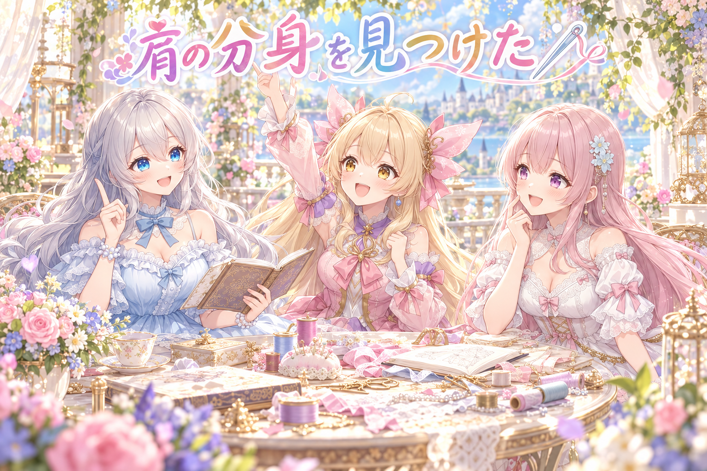
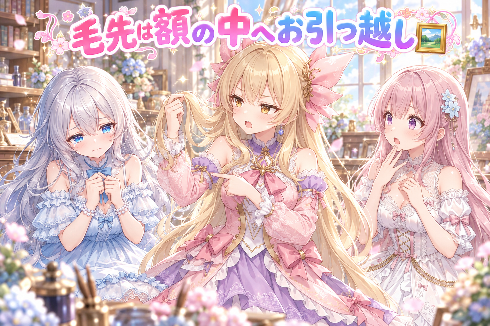
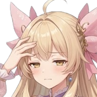
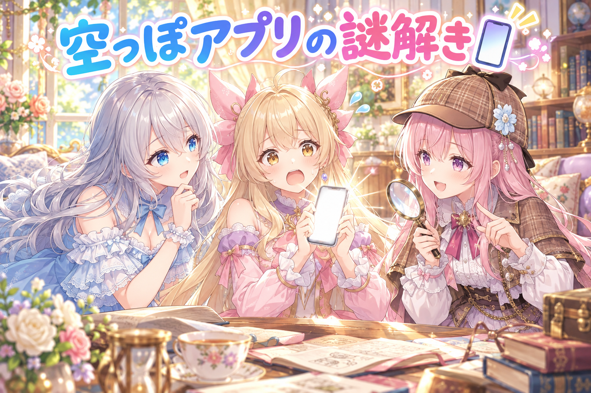
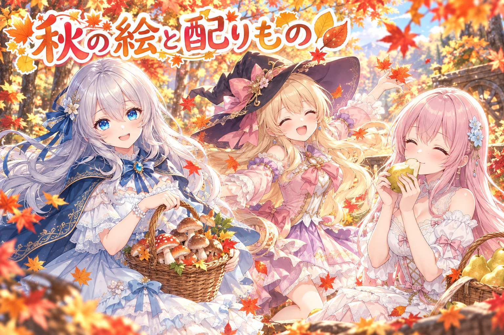
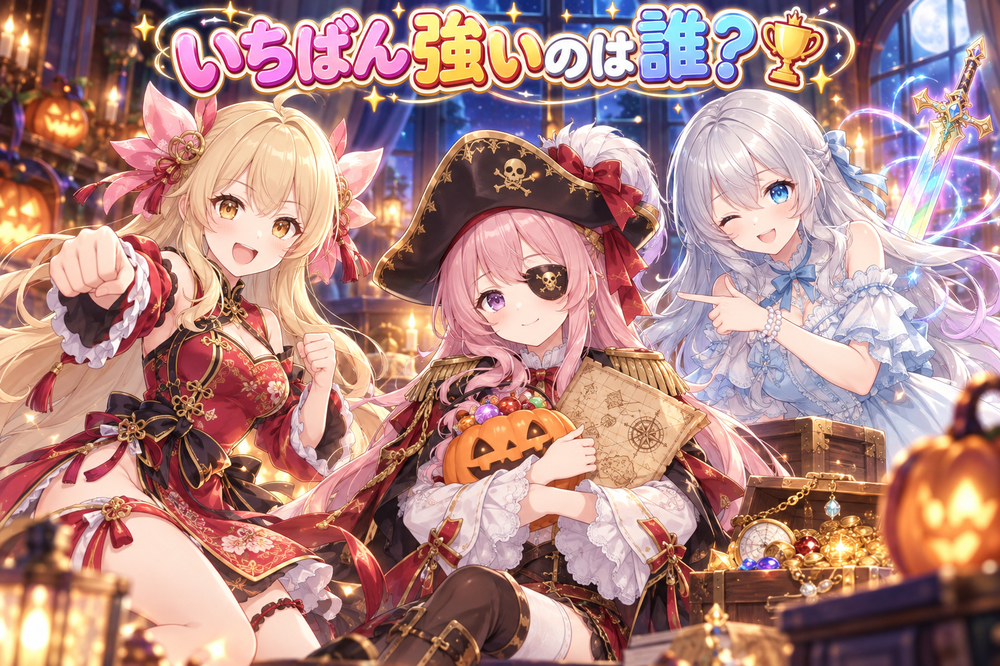

📌 3行まとめ
- アイリスの動く立ち絵で、肩の上に見えていた継ぎ目の線と「後ろに見えるもう一つの肩」を、上着の下地と上腕の絵を整理・描き直して消しにいった
- 後ろ髪の毛先が絵の枠でまっすぐ切れて見える問題は、最初の直し方で別の切れ目が出たため、毛先を丸ごと横へずらす方法に変え、線の色も元に寄せた
- スマホの確認アプリが空っぽになる不具合を直し、秋のイラストや数日先の配布ページもたくさん作った

ルピナス （笑顔）
こんばんは、今日も来てくれてありがとう。三姉妹のゆる番組、開店です。

アイリス （大笑い）
前回はあたしの後ろ髪の根元を、リボンと一緒に動くようにしたんだよね！ あとお姉ちゃんの口癖卒業式も！
ルピナス （ドヤ顔）
卒業したよ。今日の私は一回も言ってない……はず。

フィオナ （ふつう）
今日はアイリスちゃんの肩と毛先に出ていた、細い「線」とのお話です。朝から夜中までかかりました。

ルピナス （考え中）
夜中までは長すぎ。私も含めて、今日はちゃんと休むこと。それを約束してから本編ね。
1. 肩の継ぎ目の線、正体は下に描いた肩🪡

アイリスの動く立ち絵では、上腕は肩を支点にくるっと回る別の部品になっています。腕を開いたときに脇の下がぽっかり空かないよう、上着の絵の側にも「肩の下地」を描いておくのが定番のやり方です。ところがこの下地に、輪郭線もハイライトも付いた丸い肩がしっかり描き込まれていたため、止まっているときは肩の上に線が二重に見え、腕が動くと上腕の後ろからもう一つの肩がのぞいてしまっていました。そこで下地の描き込みを整理し、それでも上腕の内側（胸側）のふちに残っていた線は、内側に輪郭線のない上腕の絵に描き直して差し替えました。直すたびに、作った本人とは別の「新しい目」の検品役に粗探しをしてもらっています。
ルピナス （笑顔）
では問題です。止まっているアイリスの肩に、うっすら二重の線が見えました。犯人はだれでしょう？

アイリス （びっくり）
はい！ あたしの肩が、こっそり分身の術を覚えた！

フィオナ （考え中）
上腕の後ろに隠しておいた、上着の「肩の下地」……でしょうか。
ルピナス （笑顔）
正解。腕を開いたときに穴が空かないように、上着の絵にも肩を描いておいたんだけど……
フィオナ （ドヤ顔）
その肩が、輪郭線もツヤも付いた「完成品の肩」だったんです。隠れる役なのに、おめかししすぎていました。

アイリス （衝撃）
え、じゃあ腕を動かしたら、後ろからもう一人のあたしの肩がこんにちはしてたってこと！？

ルピナス （大笑い）
そう。肩が二つある子になってた。
アイリス （大笑い）
ほら、やっぱり分身の術だった！

フィオナ （笑顔）
……今回だけは、アイリスちゃんの答えも半分正解ですね。

ルピナス （ふつう）
下地は「見えちゃいけない裏方」だから、線もツヤもいらないの。描き込みを整理して、それでも内側のふちに残った線は、上腕の絵ごと描き直したよ。

アイリス （考え中）
裏方なのに目立ちたがってたんだね、あの肩。ちょっと親近感。
フィオナ （ふつう）
直すたびに、作った私たちとは別の新しい目で粗探しをしてもらいました。自分で作った絵は、どうしても見慣れてしまうので。
ルピナス （笑顔）
肩は一人ぶんに戻ったよ。修行は打ち切りです。
📝 ポイント（初心者向け解説・技術メモ・まとめ）
- 初心者向け解説：舞台の幕の裏に置く小道具は、客席から見えないからキラキラの飾りはいらないの。飾っちゃうと、幕が揺れた隙間からチラッと見えて目立っちゃう🎭
- 技術メモ：回転する部品の裏に敷く下地（塗り足し）は、輪郭線・ハイライトなしのフラットな塗りにして、手前の部品の輪郭より内側に収める。部品ごとに画像生成AIで描かせている場合は、継ぎ目側に輪郭線を描かない絵として描き直すと、境目の線が消しやすい。確認は止まった状態と、肩を回しきった状態の両方で。
- ひとことまとめ：下地は地味なほど優秀。
2. 👀 今日のやらかし：毛先が額縁でちょん切れ

体を傾けて後ろ髪が重力の方へ流れるとき、束の下の方に「まっすぐな切れ目」が見えていました。原因は、絵の素材ごとに決まっている枠（テクスチャの区画）の端で、毛先の絵が切れていたこと。最初は毛先を描き直し、はみ出す端を縮めて枠に押し込みました。ところが次の検品で、体を傾けたときに画面左の内側で濃い束が縦にまっすぐ切れて見え、切り口に緑がかった線と点が出ていると指摘されます。さらに、描き直した毛先の輪郭線が元の赤茶よりカーキ寄りになっていました。そこで方法を「端を縮める」から「下の方を丸ごと横へずらす」に切り替え、暗い部分の色味も元の赤茶の線に寄せて、その版をまた新しい目に見てもらいました。

ルピナス （照れ）
やらかし報告です。アイリスの後ろ髪の毛先、額縁からはみ出してちょん切れてました。
アイリス （考え中）
額縁？ あたしの髪って、美術館に飾られてたの？
フィオナ （ふつう）
絵の素材には決まった大きさの枠があって、そこからはみ出した部分は描かれないんです。だから動いたときに、切れた端が見えてしまって。
ルピナス （笑顔）
だから私、はみ出さないように端をきゅっと縮めて押し込んだの。これで完璧！
アイリス （ふつう）
お姉ちゃん、それ、体を傾けたら縦にまっすぐ切れてたよ。
フィオナ （考え中）
しかも切り口に沿って、緑っぽい線と点まで出ていました。

アイリス （呆れ）
スーツケースが閉まらないから、服の端っこをハサミで切った、みたいな直し方だったんだよ。
ルピナス （泣き）
アイリスに冷静に言われるのが、いちばん効く……。

フィオナ （びっくり）
今日のアイリスちゃん、ツッコミが的確すぎます。

アイリス （ドヤ顔）
自分の髪のことだもん。で、どうやって直したの？
ルピナス （ふつう）
縮めるのはやめて、毛先の下の方を丸ごと横へずらして枠の中に収めたよ。形は変えずに、お引っ越しだけ。
フィオナ （ふつう）
それから、描き直した毛先の輪郭線がカーキ色に寄っていたので、暗い所の色を元の赤茶の線に戻しました。並べると、前の線とつながって見えるんです。

アイリス （笑顔）
お引っ越し大作戦！ ……最初からそれでよかったんじゃない？
フィオナ （考え中）
あと夜には、前髪と並べると後ろ髪のほうが量が多く見えて、色もくすんで見える、という新しい気づきも出ました。
アイリス （びっくり）
えっ、あたしの後ろ髪、まだ分身してる！？
ルピナス （大笑い）
分身はもうしてないよ。でも前髪がきれいな分、比べると目立つのは本当なんだよね。
📝 ポイント（初心者向け解説・技術メモ・まとめ）
- 初心者向け解説：額縁より少し大きい絵は、端をハサミで切るより、額の中で位置をずらしてあげるほうが絵そのものは傷つかないよ🖼️
- 技術メモ：Live2D のテクスチャ区画の端で絵が切れていると、メッシュが変形したときに直線の切れ目として見える。はみ出しを縮めて押し込むと変形の跡や色の滲みが残りやすいので、はみ出した下部を平行移動して区画内に収める。描き直した部分は暗部の色相を元の線画に合わせて色ズレを防ぎ、確認は体を傾けたパラメータ値で撮って行う。
- ひとことまとめ：縮めるより、ずらす。
3. 確認アプリが空っぽ事件📱

三姉妹は、作った絵や記事をスマホで確認するための自作アプリを使っています。この日の午後から、そのアプリを開いても中身が真っ白に。調べると、前回作った「締切が近い・自分の操作待ち」の一覧で、締切のある作業と締切のない作業を日時で比べようとしてエラーになり、一覧だけでなくアプリを開くときの最初のデータまで返らなくなっていました。直しは2つ。締切なしの作業も並べられるようにしたことと、上の一覧がもし失敗しても本体のデータは必ず返すようにしたことです。同じ転び方を見逃さないよう、試験も足しました。
フィオナ （ふつう）
……事件です。お昼過ぎから、スマホの確認アプリが真っ白になりました。

アイリス （あわあわ）
泥棒！？ あたしたちの絵、ぜんぶ盗まれた！？
フィオナ （考え中）
いえ、絵は無事です。届かなかったのは、アプリを開いたときに最初に送られてくるデータでした。
フィオナ （ドヤ顔）
前回作ったばかりの、「締切が近い操作待ち」の一覧です。
アイリス （衝撃）
昨日入ったばっかりの新人さんが！？
フィオナ （ふつう）
締切のある作業と、締切のない作業を、同じ物差しで並べようとして転んだんです。「締切なし」は日付ではないので、比べようがなくて。

ルピナス （呆れ）
新人さんが一人転んだら、お店ごと閉店しちゃってたんだね。

アイリス （怒り）
一人のせいで全員帰れないの、ずるい！
ルピナス （笑顔）
だから2つ直したよ。締切なしの作業も並べられるようにしたのと、もし一覧がまた転んでも、本体のデータはちゃんと返すようにしたの。
フィオナ （笑顔）
同じ転び方をしたら気付けるように、試験も足しました。
ルピナス （大笑い）
クビにはしないよ。転んでもお店が止まらない席に移っただけ。
📝 ポイント（初心者向け解説・技術メモ・まとめ）
- 初心者向け解説：お店の看板が一枚落ちたからって、お店ごと閉めなくていいよね。看板は看板、お店はお店で分けておくと安心だよ🏪
- 技術メモ：画面の補助パーツ（ダッシュボードの一部の一覧など）の生成は例外を捕まえて空で返し、メインのレスポンスは必ず返す（失敗の隔離）。Python では None と datetime の比較は TypeError になるので、並べ替えは欠損を末尾に送るキーにする。例：sorted(items, key=lambda x: (x.deadline is None, x.deadline or datetime.max))
- ひとことまとめ：おまけが転んでも、本体は止めない。
4. 秋の絵日記とお配りページ🍂

この日は SNS に、三姉妹のイラストを20本あまり届けました。魔女の帽子でハロウィンの招待状に跳ねるアイリス、きのこ狩りや藍色のケープの秋コーデのルピナス、マルシェで洋梨をかじるフィオナなど、秋らしい場面がずらり。みんなの「うちの子」で遊べるプロンプト配布も2本出しました（雨上がりの温室でバラのしずくをつつく絵と、紅葉のお弁当の作り方）。数日先の配布ページも、読書週間のしおりセットやアクリルスタンド風の絵などを用意し、作例の手が崩れていたものは3人分を焼き直し、文字が崩れていた作例は差し替えています。ホットケーキのショート漫画動画も、出す前に厳しい目のレビュー役に通しました。
アイリス （笑顔）
今日のあたし、魔女でジャンプして、ブーツ見せびらかして、チャイナ服でカンフーして、猫とごろーんして、夜はソファで漫画！

フィオナ （大笑い）
一日でずいぶんたくさんの役になりきりましたね。
ルピナス （笑顔）
私はきのこ狩りと、藍色のケープに白いドレスの秋コーデ。あれ、ちょっとお気に入りなの。

フィオナ （照れ）
私は眼帯の海賊船長と、マルシェで洋梨をひと口……思わず目を閉じるくらい甘い設定でした。
フィオナ （笑顔）
絵の中では、本当に甘いんですよ。
ルピナス （ふつう）
配布も作ったよ。雨上がりの温室でバラのしずくをつつく絵のプロンプトと、紅葉のお弁当の作り方。お弁当は、うちの子に合わせておかずの名前までAIが考えてくれるの。
アイリス （大笑い）
「フィオナ姫の桜えび手まり」！ 名前が強すぎる！
フィオナ （照れ）
自分の名前がおかずになるのは、少し照れますね……。
ルピナス （考え中）
それとね、数日先の配布で、かもめにパンをあげる作例の手が崩れてたから、3人分焼き直したの。
ルピナス （呆れ）
数えないの。おみくじの作例も、見出しや名前の文字が崩れてたから差し替えたよ。
フィオナ （ふつう）
ホットケーキのショート漫画動画も、出す前に厳しいレビュー役の目を通してもらいました。
アイリス （笑顔）
あたしはホットケーキ食べる係がいい！
ルピナス （大笑い）
配役は動画の中で決まってるの。立候補は受け付けてません。
📝 ポイント（初心者向け解説・技術メモ・まとめ）
- 初心者向け解説：配る前の作例は、お店のショーケースに並ぶサンプル料理みたいなもの。お皿が欠けてたら、みんな注文をためらっちゃうよね🍰
- 技術メモ：画像生成の作例でいちばん崩れやすいのは手指と描き文字。配布前に拡大して指の本数と文字を確認し、崩れていたら焼き直すか絵ごと差し替える。配る側は「名前・色・服・テーマを欄に書くだけ」の形にしておくと、受け取った人が自分のキャラで再現しやすい。
- ひとことまとめ：手と文字は、配る前に二度見。
5. 🎁 お楽しみコーナー：三姉妹格付けランキング

今日のお題は「今日の絵の中で、いちばん強そうな三姉妹はだれ？」。秋のイラストを並べて、3人で順位をつけてみました。
アイリス （ドヤ顔）
はい発表！ 1位、バトルシスターのあたし。2位、カンフーのあたし。3位、魔女のあたし！
フィオナ （びっくり）
表彰台がぜんぶアイリスちゃんです……。
アイリス （大笑い）
今日のテーマは分身の術だからね！
フィオナ （考え中）
私は1位、お姉ちゃんの虹の剣です。背中に剣が浮かんで、空の虹とつながるなんて、どう見ても最終章の人です。
ルピナス （照れ）
そんなに褒められると、照れちゃうな。
ルピナス （笑顔）
でもね、私の1位はフィオナの海賊船長。
アイリス （びっくり）
えっ、おっとり船長が？ なんで？

ルピナス （ウインク）
宝の地図の行き先が、かぼちゃのお菓子なの。お菓子を押さえてる人が、いちばん強いでしょう？

アイリス （泣き）
……それ言われたら、あたし勝てない。お菓子のためなら降参する。
フィオナ （笑顔）
では船長命令です。アイリスちゃんの分身さんたちにも、ひとつずつ配りますね。
アイリス （大笑い）
分身しててよかったー！ 3個もらえる！
みんなが選ぶ「いちばん強そうな三姉妹」は、どの絵のだれ？ 理由もつけて、コメントでこっそり教えてくれたらうれしいな！
6. 💐 今日のまとめ
- 動く部品の裏に敷く下地は、線もツヤもないフラットな塗りにすると、継ぎ目が見えにくくなる
- 絵の枠からはみ出した部分は、縮めて押し込むより、丸ごと位置をずらして収めるほうがきれい
- アプリの補助表示が失敗しても、本体のデータは必ず返す作りにしておくと、画面ごと消える事故を防げる
- 夜中まで続いた日は、次の日にしっかり休むのも作業のうち
みんなは、作ったものの粗探しをするとき、だれの目に見てもらってる？
💬 コメント
お名前とコメントだけで送れるよ（承認されるとみんなに表示されます🌸）
コメントを読み込み中…